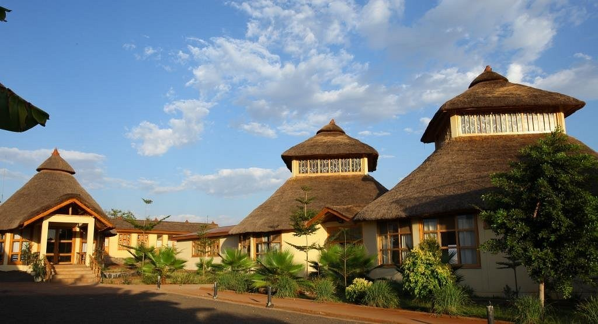
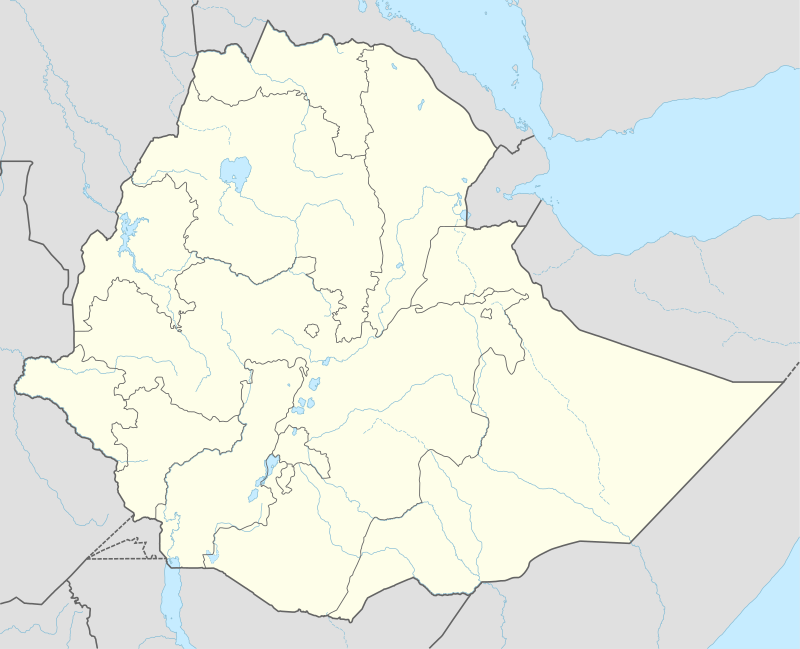
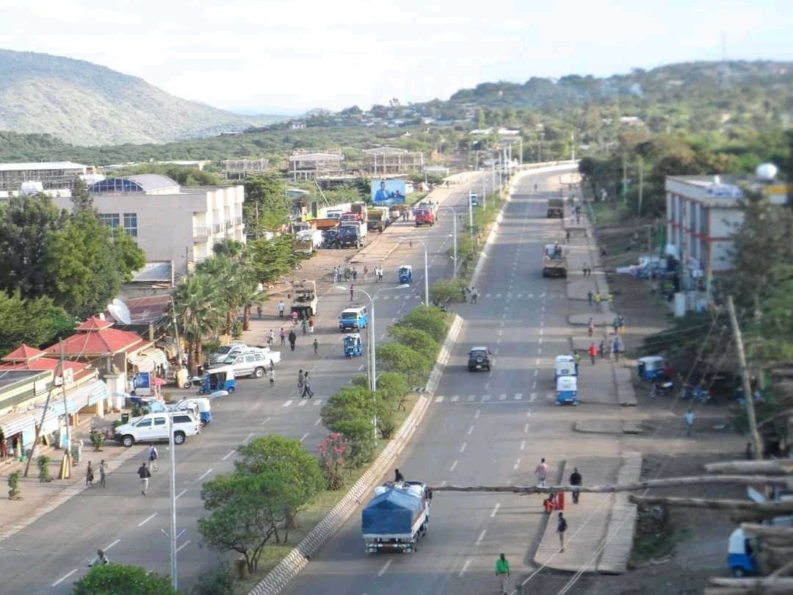

General link images→
city
zebra

univerity
hospital

resort

map
what is Arba Minch ?
A/minch(አ/ምንጭ) Minch (formerly called Ganta Garo) is a city and
separate woreda in the southern part of Ethiopia. "Arba
Minch" means "40 Springs" the name was originated from the
presence of more than 40 springs. It was located in the Gamo
Zone of the Southern Nations, Nationalities, and Peoples
Region about 500 kilometers south of Addis Ababa, at an
elevation of 1285 meters above sea level. It is the largest town
in Gamo Zone and the second town in SNNPR next to
Hawassa, which is now the capital city of the newly formed
Sidama Region. It is surrounded by Arba Minch Zuria
woreda. This Town has plenty of natural gifts including the
bridge of God, Crocodile ranch, crocodile market, different
fruits and vegetables, different fishes farmed from Chamo and
Abaya Lakes, more than 40 springs, different cereals, and
crops, surprisingly having the two big Lakes in the country,
lake Abaya and Chamo, respectively, next to Lake Tana, etc.
This makes the town an attraction for domestic and
international tourism.
Arba Minch received its name for the abundant local springs which produce a groundwater forest. Located at the base of the western side of the Great Rift Valley, Arba Minch consists of the uptown administrative centre of Shecha and 4 kilometers away the downtown commercial and residential areas of Sikela, which are connected by a paved road. On the eastern side of Sikela is the gate to Nechisar National Park , which covers the isthmus between Lake Abaya to the north and Lake Chamo to the south. Buses and taxis connect the uptown and downtown parts; both parts have schools. Kulfo River flows through the town, and drains into Lake Chamo.


Arba Minch was founded in the early 1960s by the Fitawrari
Aemeroselasie Abebe in the area locally known as "Ganta Garo".
The city succeeded Chencha as the provincial capital city of Gamo
Gofa.
The oral tradition has it that Fitawrari Aemiro Selassie
Abebe had to fight with prominent figures of Chencha (Aba Gaga)
to move the capital from Chencha to Arba Minch (Ganta Garo).
One of the reasons for Aemiroselassie Abebe to move the
provincial center from Chencha to Arba Minch (Ganta Garo) was
for travelers from Gidole to Chencha to take a break after a long,
hot crossing of the arid Rift Valley area. Roads were built linking
the new town to Soddo and making Arba Minch only a day's
journey by road to the capital, Addis Ababa.
A telephone line connecting the town to the capital, costing
E$ 250,000, was turned up on 15 July 1967.
Arba Minch had previously served as a capital city for Gamo Gofa Province (Gamo Gofa Teklay Gizat),
North Omo Zone (Semen Omo), Kilil 9 (Region 9), Gamo Gofa Zone, and now is serving as a capital city
of Gamo Zone.
The Norwegian Lutheran Mission opened a station at Arba Minch in 1970, which included a trade school;
the school's operation was later taken over by the Mekane Yesus Church. At the beginning of the Ethiopian
Revolution public demonstrations occurred in the town,[6] and four people were killed in clashes with the
police on 28 March 1974.[5] Following the revolution privately held plantations were made into state
farms.
The 193 million birr Arba Minch Textile Mill was opened on 6 May 1992 in the presence of Ethiopian
Prime Minister Tamirat Layne. The mill would produce polyester mixed with cotton grey fabrics.
According to the SNNPR's Bureau of Finance and Economic Development, as of 2003 other amenities in
Arba Minch include postal service, 24-hour electrical service, a bank and a hospital.
May 2010, the
Ethiopian Roads Authority awarded a contract worth 563 million E$ to the construction firm of Brehane
Hagos to build a road 60 kilometers in length from this town to Belta.
The United States military
operated a facility at Arba Minch from 2011 until September 2015. The facility served as the base for
several General Atomics MQ-9 Reaper unmanned aerial vehicles
Based on the 2007 Census conducted by the CSA, this town has a total population of 100,879, of whom 50,208 are men and 49,671 women. The majority of the inhabitants practiced Ethiopian Orthodox Christianity, with 56.04% of the population reporting that belief, 38.47% were Protestants, and 4.16% were Muslim.The 1994 national census reported this town had a total population of 40,020 of whom 20,096 were males and 19,924 were females.